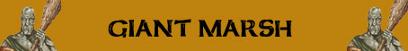

Seppellire l'Avversario;

|
|
Ambiente/Habitat | Paludi |
| Frequenza | Rare | |
| Organizzazione | Solitary | |
| Periodo di Attività | Qualsiasi | |
| Dieta | Carnivora | |
| Intelligenza | Average intelligence (8) | |
| Punti Combattimento | 18 Punti Combattimento | |
| Tesoro | Comune | |
| Allineamento Dominante | Neutrale Malvagio | |
| Numero di Apparizione | 1 | |
| Classe Armatura | 4 [10 base, -6 corazza] | |
| Movimento | 8 esagoni | |
| Dadi Vita | 13 | |
| Thac0 | 6 | |
| Numero di Attacchi | Ramo | |
| Danni | 3d6+2 (Botta) | |
| Poteri Offensivi | Impeto Superiore; Seppellire l'Avversario; |
|
| Poteri Difensivi | Fetore Nauseante; | |
| Poteri Generici | Camminata Acquatica; | |
| Vulnerabilità | Nessuna; | |
| Resistenza alla Magia | Nessuna; | |
| Sensi | Vista Comune; | |
| Dimensioni | Huge (5 m. altezza) | |
| Morale | Champion (16) | |
| Valore in Punti Esperienza | 8699 |
| MODIFICATORI AI TIRI SALVEZZA | |||||||||||||||||||||||
| COR | 0 | 32 | ENV | 0 | 35 | MAG | 0 | 49 | MAL | +10 | 21 | MEN | 0 | 47 | RIF | 0 | 42 | ROB | +5 | 26 | VEL | 0 | 23 |
Descrizione
Un umanoide, un gigante, alto 7 metri, la pelle scura color olivastro, completamente ricoperto di terriccio, fango, muschio ed anche veri e propri arbusti e rampicanti. Questo gigantesco umanoide, che sembra essere stato partorito dalla madre terra stessa. La grande testa è glabra mentre è presente una folta simile ad un grosso ammasso di alghe marroni che ricopre le gote e il mento. Questa commistione di pelle, terra e fango fa si che si sparga intorno a lui un odore forte e pungente estremamente nauseante.
La terra trema, mentre un enorme collina, forse a causa di una frana si avvicina sempre di più. Passato il primo momento di smarrimento e guardando con un po’ più di attenzione ci si accorge che quella che si sta avvicinando non è una collina, ma qualcosa di mostruosamente diverso... [Dalle memorie di Raidnor, Umano Alchimista dell'8° livello, 201 p.n. inflictus (by Francesco Indrizzi)]
Combat
Il gigante utilizza un tronco come arma per colpire ed uccidere i suoi avversari. Per poter sopraffare il proprio avversario o per mettere temporaneamente fuori combattimento alcuni nemici quando combatte contro più di una creatura, il gigante lancia, prelevandola a due mani dalla palude, una grossa quantità di fango e materiale vario cercando di seppellirlo ed immobilizzare la propria vittima sotto il peso del terreno per poi approfittare della situazione per colpirla con maggiore facilità.
IMPETO SUPERIORE (Superior Special Ability): Questa creatura riesce a colpire i propri avversari con impeto superiore, per tale motivo riceve un bonus costante di +2 ai suoi tiri per colpire.
SEPPELLIRE L'AVVERSARIO (Powerful Special Ability): Questa creatura può, in luogo di effettuare un'altra azione complessa, raccogliere melma e fango da un qualsiasi acquitrino e gettarlo sull'avversario di dimensioni massimo large che si trovi entro 18 metri di distanza. Si consideri un'azione complessa avente fattore iniziativa pari a +5. La vittima potrà superare un tiro salvezza su riflessi (senza l'applicazione di alcun tipo di modificatore). Se il tiro salvezza riesce la vittima avrà evitato la massa di fango, altrimenti sarà investita dalla stessa. In quest'ultimo caso la vittima finirà a terra (knockdown) perdendo ogni altra azione del round. A partire dal round successivo la vittima potrà provare a liberarsi dall'ammasso di fango. Si tratta di un'azione complessa, che fa accumulare un punto fatica, dalla durata di un intero round al termine del quale la stessa dovrà superare un tiro salvezza su robustezza modificato dal suo punteggio di forza in luogo di quello di costituzione (senza applicare alcuna modifica per la differenza di livello). Se il tiro salvezza riesce la vittima si considererà libera, in piedi, alla fine del round. Per ogni tentativo di liberarsi successivo al primo la vittima otterrà un bonus di +5% al suddetto tiro salvezza. Le creature Large ottengono un ulteriore bonus di +5% al tiro salvezza. Fino a che resta coperta dal fango la vittima non potrà spostarsi o compiere altre azioni ma sarà colpibile senza alcuna particolare difficoltà (con i modificatori dovuti alla posizione knockdown).
FETORE NAUSEANTE (Lesser Special Ability): L'incredibile fetore emanato costantemente dal corpo della creatura può nauseare facilmente anche i più temerari avventurieri. Per tale motivo, chi si avvicina in corpo a corpo con uno di questi esseri deve superare immediatamente un tiro salvezza su robustezza. Se il tiro salvezza riesce la creatura non subirà penalità e non dovrà effettuarne uno nuovo per 24 ore (anche qualora sia avvicini ad uno diverso di questi esseri). Se il tiro salvezza fallisce la creatura avvertirà un profondo disgusto ed otterrà una penalità di -1 ai tiri per colpire ed il 10% di perdere la concentrazione fino a che resterà in contatto (corpo a corpo) con uno qualsiasi di questi esseri. Questo effetto perdurerà per 24 ore al termine delle quali la creatura avrà diritto a superare un nuovo tiro salvezza. Al tiro salvezza non sarà applicato il modificatore dovuto alla differenza di livello tra questo essere e la creatura che gli si è avvicinata. Creature che sono indifferenti alla puzza di marciume, come gli esseri vegetali, i non morti, i costruiti, i demoni e gli elementali sono immuni agli effetti di questa abilità.
CAMMINATA
ACQUATICA
(Lesser Special
Ability): Questa
creatura è in grado di spostarsi camminando con il corpo parzialmente immerso
nell'acqua riducendo di una classe la penalità al movimento che le sarebbe
normalmente applicata. Si noti che quest'abilità non riduce l'eventuale penalità
al combattimento prevista per il corpo parzialmente immerso nell'acqua.
Habitat/Society
Questa tipologia di giganti per le sue dimensioni e per la morfologia stessa si trovano solo all'interno di grandi depressioni o zone paludose come, ad esempio, le terre selvagge o le paludi del Nord Arelia. Non conoscendosi con precisione la genesi di queste umanoidi si presuppone che non esistano delle tribù o dei clan. Quando molto raramente è stato avvistato un esemplare del genere infatti, i pochi fortunati che hanno avuto la possibilità di tornare a riferirlo, hanno sempre detto di aver incontrato una singola creatura. Normalmente sono soliti abitare in grandi e profonde caverne naturali oppure nelle cavità di grandi alberi palustri, talvolta è possibile vedere in lontananza una grande accatastamento di alberi messi in maniera più o meno irregolare con una pelle di animale gigante sopra, queste sono delle rudimentali capanne costruite dai Giant Marsh. Essendo per sua natura solitario, non si accompagna con altri membri della propria razza, è però possibile talvolta trovarlo in compagnia di qualche essere umanoide inferiore di taglia media come i lizardmen che utilizza come guardie e cacciatori.
Ecology
Il Gian Marsh è mosso da una profonda avversione per tutti gli essere civilizzati che osano invadere od esplorare le terre palustri ed il suo habitat.
Mystical Resource Sourge (Cuore) Quantità: 1, Presenza 50% - Effetto Particolare: Resistenza e Vigore Fisico - Qualità della Risorsa: Uncommon.
Tesoro
I Giganti delle Paludi sono creature possenti ed intelligenti. Conoscono il valore degli oggetti preziosi e di quelli in cui la risiede la magia e li collezionano per scambiarli con altre creature intelligenti al fine di ottenere ciò di cui hanno bisogno. A volte capita, dunque che un gigante, essendone molto geloso, porta con se i propri tesori personali in sacche di pelli animali. Segue la tabella del tesoro individuale (già modificata per la taglia) della creatura:
| Tipologia di Tesoro | 13-14 Dadi Vita | Quantità |
| Gemme |
18% |
1d6 gemme |
| Oggetti Preziosi | 18% | 1d12: (1-6) 1 oggetto (7-9) 2 oggetti (10-12) 3 oggetti |
| Oggetti Comuni | 39% | 1 oggetto comune |
| Armi | 26% | 1 arma |
| Armature | 18% | 1 corazza |
| Oggetto Magico |
13%
8% |
1 oggetto magico 1d10: (1-6) common (7-10) rare |
| Monete di platino | 29% | 3d20+4d10 monete di platino |
| Monete d'oro | 50% | 3d100*3+1d100+50 monete d'oro |
| Monete d'argento | 50% | 1d10*6 + 5d10+60 monete di argento |
| Monete di rame | 50% | 1d10*10+1d10+60 monete di rame |